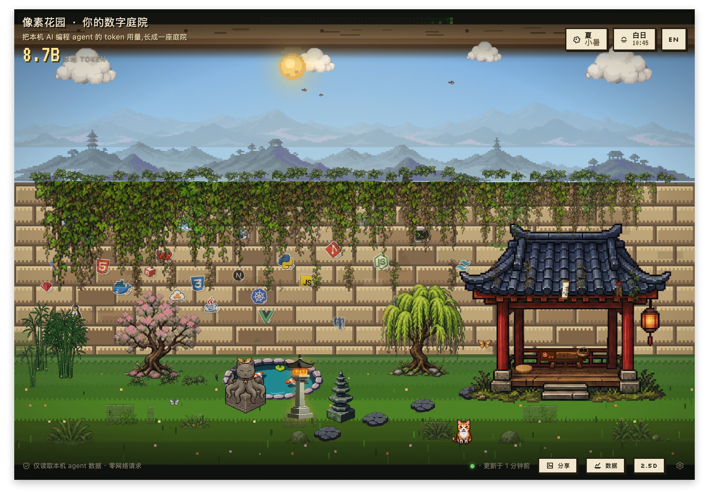

See your work take root
Tokens, sessions, recent activity, time, and season shape vines, lights, cats, trees, and pavilion details.
Local AI activity, grown into a garden
A private desktop garden that turns local Claude Code, Claude Cowork, and Codex activity into something that grows with your work.
What grows
Glance at the courtyard, notice what changed, and return to work. Project history, costs, and model details stay one step away.
Tokens, sessions, recent activity, time, and season shape vines, lights, cats, trees, and pavilion details.
Inspect projects, model mix, daily activity, local cost estimates, history, and share cards without turning the home screen into a dashboard.
Claude Code, Claude Cowork, Codex, and manual JSONL feed one garden through isolated adapters, with tray and CLI access built in.
Wall mode
The Wall view keeps the original visual metaphor visible: project growth hangs from the wall edge, programming stickers mark the ecosystems around the work, and the wall surface becomes a direct map of local agent activity.

How it grows
Each source is read through an isolated adapter, summarized by the Rust core, and rendered into the same garden without exposing raw source formats to the interface.
local traces
Claude Code, Claude Cowork, Codex, and manual JSONL stay where they already live.
adapter
Each adapter reads one source and emits the same private event shape.
garden summary
The core deduplicates sessions and summarizes projects, models, tokens, and local cost estimates.
garden surfaces
The courtyard, Wall, Insight, tray, CLI, and share cards all read the same summary.
Privacy and data
Pixel Agent Garden reads local agent data only. It never uploads activity, collects telemetry, or modifies Claude and Codex source files.
Start here
Open Releases to see the available macOS, Windows, and Linux builds. Developers can also build from source without npm, a CDN, or runtime telemetry.
macOS · Windows · Linux
# Inspect adapters
cargo run --release -p local-agent-garden-cli -- adapters
# Scan local agent activity
cargo run --release -p local-agent-garden-cli -- scan
# Render the terminal wall
cargo run --release -p local-agent-garden-cli -- garden
# Launch the desktop app
cd crates/tauri-app
cargo tauri dev